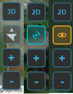
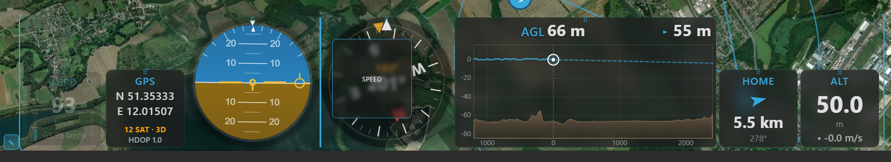

Telemetry & display¶
Once you're connected, Kite turns the link into a live cockpit: a moving map behind a set of flight instruments, with the aircraft's status along the top. This guide explains what every part shows and how to arrange it to your liking.
Everything here works the same way on a live link and during log replay — the widgets and map are driven by the same telemetry stream either way.
The moving map¶
The map fills the whole background and is always interactive — pan and zoom even with a panel open. It draws, in real time:
- Your aircraft — an icon at the current position, rotated to its heading.
- The flown track — a trail behind the aircraft.
- Home — the home/launch point once the flight controller sets it.
- The mission — any loaded or downloaded waypoints (see Missions).
Direction indicators¶
At the aircraft, Kite can draw short direction lines: the heading (where the nose points), the course over ground (where it's actually travelling — the two differ in wind), and a predicted-turn arc. Toggle them with Direction indicators in Settings (on by default).
Map controls¶
A small cluster of buttons sits in one corner of the map:
- 2D / 3D — switch between the flat moving map and the full 3D globe. The button shows the mode you'll switch to. The 3D view has its own controls — see the 3D map guide.
- Follow mode — cycles Free → Follow → Heading-up: free panning, keep the aircraft centred, or centre and rotate the map to the aircraft's heading.
- Zoom + / − — the mouse wheel works too.

The map controls — the 2D/3D, follow-mode and zoom buttons (shown here in several states).
Aircraft status (top bar)¶
The centre of the top bar is a live health summary of the connected craft:
- Arming indicator — whether the aircraft is ARMED or DISARMED.
- Sensor-health tiles — gyro, accelerometer, mag, baro, GPS, and rangefinder / airspeed when fitted. Green = OK, amber = warning, red = fault. Tiles only appear for sensors your craft actually reports, so the row adapts to the airframe.
- Battery — the primary pack's voltage and charge. See the Battery widget below for the full read-out, and Batteries for the pack library.
The same arming state is repeated at the far right of the status bar (the thin strip along the very bottom), alongside the connection dot, firmware variant, version and port.
Widgets & the docks¶
Flight instruments live in two docks: the right dock down the side and the bottom dock along the bottom. Each widget is self-contained and updates live.
Arranging widgets¶
- Choose which widgets appear in Settings — toggle each on or off.
- Rearrange them: click the ✎ (edit) button by a dock to enter edit mode, then drag widgets to reorder them or move them between the two docks.
- Resize them: in edit mode each widget shows a resize button in its corner. Every tap steps it to its next size — square widgets toggle small ↔ large, the wide ones (Live AGL, Video) cycle wide → large square → small square. The aspect ratio never changes (a widget is only rescaled), and a dock shrinks to its largest widget, so a row of small tiles frees the space above it. The Video widget always crops to fill its tile, whatever its size.
- Widgets scale to fit the dock, and your layout (which dock each widget sits in, and its size) is remembered between sessions.
- On a phone the docks are replaced by a widget column on the right edge with two swipeable pages; long-press a widget to rearrange or resize — see Kite on a phone in the Quick tour.

Edit mode — drag widgets to reorder them or move them between the docks.
The widgets¶
| Widget | What it shows |
|---|---|
| AHI (artificial horizon) | Pitch and roll against an artificial horizon, plus a flight-path-vector marker. |
| Speed | Airspeed when available (ground speed otherwise), with ground speed on a second line — or ground speed only (no second line) when airspeed is turned off in Settings. A throttle bar (0–100 %) sits on the left and a derived acceleration bar on the right. |
| Altitude | The aircraft's barometric / navigation altitude (relative to home). |
| Compass | A rotating rose with the heading at the centre and a fixed top pointer. An amber course-over-ground bug rides the rim while moving — the gap to the nose is your crab angle — with the COG value read out above the heading. When wind is reported, a blue wind arrow (pointing downwind) and wind speed appear — see Wind in Settings for which firmware sends it live. |
| GPS | Latitude / longitude, satellite count, fix type (No fix / 2D / 3D / 3D DGPS) and HDOP. |
| Home | A large arrow pointing to home relative to the aircraft's heading, with distance and bearing. |
| Battery | A charge bar (FC % when reported), voltage, current and power (V × A), plus charge drawn. On multi-battery aircraft (ArduPilot / PX4) it follows the highest-draw pack automatically, with manual pinning; add a second Battery 2 widget to watch two packs at once — see Batteries. |
| Flight Mode | The current flight mode as a colour-coded badge — colour by mode category (shared with the track colours), with sub-mode modifier chips and waypoint progress during a mission. |
| RC Link | Link quality — shows whatever the active protocol provides and hides the rest (CRSF / SmartPort / INAV 9.1+ give LQ + RSSI %/dBm + SNR; MAVLink, LTM and INAV before 9.1 give RSSI only). |
| Live AGL | A forward-looking terrain-profile HUD: flown terrain on the left, estimated terrain ahead on the right, with a projected flight line that warns of a ground intersection. |
| Terrain Radar | A top-down, track-up terrain-awareness display (EGPWS-style): a forward fan coloured by clearance against your altitude, with a range and REL / PRED mode button (shown in dock edit mode). |
| Video | A live video feed embedded as a widget — an RTSP stream or a local capture device / camera (e.g. a USB capture card). See Video. |
Units are global
Speed, altitude, distance, vertical speed and temperature units come from Settings and apply everywhere — every widget and map read-out follows them.
Raw telemetry¶
For the unconverted figures, click ≡ Raw in the top bar (it appears next to ⇅ Relay while you are connected). A popup lists every value the telemetry pipeline holds — GPS, attitude, altitude and speeds, wind, battery (per pack on multi-battery aircraft), RC link, status and flight-mode flags, sensor health, EKF and flight-controller identity — each with its name and raw unit (metres, m/s, degrees, volts, the FC's own RSSI scale). Bitfields are shown as decimal and hex. It is read-only and updates live; close it with the ✕, Escape, or a click outside.
How smooth it looks: telemetry rates¶
How often the instruments update depends on the telemetry rates in Settings — chiefly the attitude rate (drives AHI / compass responsiveness) and the position rate (map movement, speed, altitude). Higher rates look smoother but use more link bandwidth; the defaults are conservative so they're safe even on a slow over-the-air link.
On MAVLink, Kite normally requests only the messages it needs at those two rates and turns the rest
of the firmware's high-rate streams down, so a narrow telemetry radio isn't flooded. The Full MAVLink
Telemetry option turns that off: Kite hands rate control back to the flight controller, which then
streams whichever fields at whatever rates it is configured for. Use it on a fast link (USB, Wi-Fi,
high-bandwidth radio) or when you want a complete .tlog recording. (These rate requests are sticky on
the FC until it reboots.)
UAV Info panel¶
The UAV Info tool on the navigation rail is a quick read-out of what you're connected to:
- Flight controller — craft name, firmware variant and version, board / target, vehicle type, the API version, and hardware revision when reported. Shown for any connection (INAV, ArduPilot, PX4).
- Features (INAV) — badges for the INAV capabilities Kite can use (autoland, geozones, MSP-RC, AUX-RC, ADS-B), lit when your INAV version supports them. These are version-dependent and INAV-specific, so the section appears only on an INAV link.

The UAV Info panel on an INAV link — flight-controller identity and the version-gated feature badges.